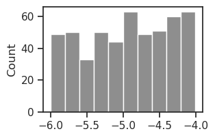

(28) debug — why different from pvae?#
Motivation: host = mach, device = cuda:3
Show code cell source
# HIDE CODE
import os, sys
from IPython.display import display
# tmp & extras dir
git_dir = os.path.join(os.environ['HOME'], 'Dropbox/git')
extras_dir = os.path.join(git_dir, 'jb-vae/_extras')
fig_base_dir = os.path.join(git_dir, 'jb-vae/figs')
tmp_dir = os.path.join(git_dir, 'jb-vae/tmp')
# GitHub
sys.path.insert(0, os.path.join(git_dir, '_PoissonVAE'))
from figures.fighelper import *
from vae.train_vae import *
# warnings, tqdm, & style
warnings.filterwarnings('ignore', category=DeprecationWarning)
warnings.filterwarnings('ignore', category=FutureWarning)
warnings.filterwarnings('ignore', category=UserWarning)
from rich.jupyter import print
%matplotlib inline
set_style()
from base.utils_model import load_quick
device_idx = 3
device = f'cuda:{device_idx}'
Init Iterative PVAE#
Get configs#
model_type = 'poisson'
cfg_vae, cfg_tr = default_configs('vH16', model_type, 'lin|lin')
cfg_vae['init_scale'] = 1e-2
cfg_tr['lr'] = 2e-3
cfg_tr['epochs'] = 3000
cfg_tr['batch_size'] = 1000
cfg_tr['kl_beta'] = 1.0
print(f"VAE:\n{cfg_vae}\n\nTrainer:\n{cfg_tr}")
VAE: {'dataset': 'vH16', 'n_ch': 32, 'n_latents': 512, 'prior_clamp': -4, 'fit_prior': True, 'enc_type': 'lin', 'dec_type': 'lin', 'enc_bias': False, 'dec_bias': False, 'init_dist': 'Normal', 'init_scale': 0.01} Trainer: {'lr': 0.002, 'batch_size': 1000, 'epochs': 3000, 'optimizer_kws': {'weight_decay': 0.0}, 'grad_clip': 500, 'kl_const_portion': 0.0, 'kl_beta': 1.0}
Make model + trainer#
tr_pvae = TrainerVAE(
MODEL_CLASSES[model_type](CFG_CLASSES[model_type](**cfg_vae)),
ConfigTrainVAE(**cfg_tr),
device=device,
)
tr_pvae.model.print()
print(f"{tr_pvae.model.cfg.name()}\n{tr_pvae.cfg.name()}_({tr_pvae.model.timestamp})\n")
tr_pvae.show_schedules()
+-------------+------------+ | Module Name | Num Params | +-------------+------------+ | PoissonVAE | 262.7 K | | --- | --- | | fc_enc | 131.1 K | | fc_dec | 131.1 K | +-------------+------------+
poisson_uniform_c(-4)_vH16_z-512_fp_nrm-none_<lin|lin> mc_b1000-ep3000-lr(0.002)_beta(1:0x0.5)_temp(0.05:lin-0.5)_gr(500)_(2024_08_28,12:19)
print(vars(tr_pvae.model.cfg))
{ 'prior_log_dist': 'uniform', 'prior_clamp': -4, 'hard_fwd': False, 'exc_only': False, 'rmax_q': 1.0, 'type': 'poisson', 'enc_type': 'lin', 'dec_type': 'lin', 'enc_bias': False, 'dec_bias': False, 'enc_norm': False, 'dec_norm': False, 'dataset': 'vH16', 'input_sz': 16, 'n_ch': 32, 'n_latents': 512, 'fit_prior': True, 'use_bn': False, 'use_se': True, 'res_eps': 1.0, 'init_dist': 'Normal', 'init_scale': 0.01, 'activation_fn': 'swish', 'seed': 0, 'base_dir': '/home/hadi/Projects/PoissonVAE', 'data_dir': '/home/hadi/Datasets', 'runs_dir': '/home/hadi/Projects/PoissonVAE/runs/poisson_uniform_c(-4)_vH16_z-512_fp_nrm-none_<lin|lin>', 'mods_dir': '/home/hadi/Projects/PoissonVAE/models/poisson_uniform_c(-4)_vH16_z-512_fp_nrm-none_<lin|lin>', 'results_dir': '/home/hadi/Projects/PoissonVAE/results' }
print(vars(tr_pvae.cfg))
{ 'lr': 0.002, 'epochs': 3000, 'batch_size': 1000, 'warm_restart': 0, 'warmup_epochs': 5, 'optimizer': 'adamax_fast', 'optimizer_kws': {'weight_decay': 0.0, 'betas': (0.9, 0.999), 'eps': 1e-08}, 'scheduler_type': 'cosine', 'scheduler_kws': {'T_max': 2995.0, 'eta_min': 1e-05}, 'ema_rate': None, 'grad_clip': 500, 'chkpt_freq': 50, 'eval_freq': 20, 'log_freq': 10, 'use_amp': False, 'method': 'mc', 'kl_beta': 1.0, 'kl_beta_min': 0.0001, 'kl_anneal_cycles': 0, 'kl_anneal_portion': 0.5, 'kl_const_portion': 0.0, 'lambda_anneal': False, 'lambda_init': 0.0, 'lambda_norm': 0.0, 'temp_anneal_portion': 0.5, 'temp_anneal_type': 'lin', 'temp_start': 1.0, 'temp_stop': 0.05 }
self = tr_pvae
x = next(iter(self.dl_vld))[0]
recon_batch, kl, dist = self._fun(x)
kl.shape, recon_batch.shape
(torch.Size([1000, 512]), torch.Size([1000]))
kl_batch = torch.sum(kl, dim=1)
kl_batch.shape
torch.Size([1000])
recon_batch.mean(), kl_batch.mean()
(tensor(195.9986, device='cuda:1', grad_fn=<MeanBackward0>),
tensor(0.0428, device='cuda:1', grad_fn=<MeanBackward0>))
loss = recon_batch + 1.0 * kl_batch
loss = torch.mean(loss)
loss
tensor(196.0414, device='cuda:1', grad_fn=<MeanBackward0>)
sns.histplot(tonp(self.model.fc_dec.weight.data).ravel(), element='step', color='b')
sns.histplot(tonp(self.model.fc_enc.weight.data).ravel(), element='step', fill=False, color='r');

self.model.temp, self.model.n_exp
(tensor(1., device='cuda:1'), tensor(263, device='cuda:1'))
sns.histplot(tonp(self.model.log_rate.ravel()), color='dimgrey');

x = next(iter(self.dl_vld))[0]
with torch.inference_mode():
output = self.model(x)
dist, log_dr, spks, y = output
dist.rate
tensor([[0.0089, 0.0052, 0.0022, ..., 0.0197, 0.0089, 0.0073],
[0.0071, 0.0035, 0.0023, ..., 0.0170, 0.0063, 0.0062],
[0.0095, 0.0049, 0.0026, ..., 0.0201, 0.0079, 0.0071],
...,
[0.0091, 0.0036, 0.0028, ..., 0.0140, 0.0087, 0.0072],
[0.0077, 0.0045, 0.0022, ..., 0.0123, 0.0079, 0.0066],
[0.0084, 0.0051, 0.0023, ..., 0.0141, 0.0087, 0.0049]],
device='cuda:1')
0.0127, 0.0105, 0.0030, 0.0140, 0.0027, 0.0147, 0.0030, 0.0149, 0.0088,
dist.rate[123]
tensor([0.0083, 0.0047, 0.0025, 0.0026, 0.0130, 0.0148, 0.0073, 0.0127, 0.0064,
0.0129, 0.0106, 0.0030, 0.0141, 0.0028, 0.0139, 0.0031, 0.0146, 0.0083,
0.0055, 0.0056, 0.0022, 0.0028, 0.0097, 0.0099, 0.0062, 0.0056, 0.0148,
0.0150, 0.0093, 0.0077, 0.0098, 0.0054, 0.0035, 0.0088, 0.0067, 0.0053,
0.0076, 0.0125, 0.0193, 0.0058, 0.0076, 0.0048, 0.0083, 0.0044, 0.0068,
0.0135, 0.0040, 0.0078, 0.0035, 0.0109, 0.0092, 0.0049, 0.0122, 0.0026,
0.0052, 0.0040, 0.0049, 0.0139, 0.0039, 0.0026, 0.0050, 0.0042, 0.0034,
0.0068, 0.0052, 0.0105, 0.0042, 0.0160, 0.0056, 0.0028, 0.0080, 0.0143,
0.0061, 0.0174, 0.0092, 0.0052, 0.0091, 0.0156, 0.0180, 0.0052, 0.0102,
0.0077, 0.0064, 0.0105, 0.0065, 0.0104, 0.0106, 0.0142, 0.0031, 0.0104,
0.0150, 0.0227, 0.0026, 0.0116, 0.0165, 0.0163, 0.0038, 0.0149, 0.0162,
0.0120, 0.0062, 0.0042, 0.0149, 0.0132, 0.0045, 0.0069, 0.0071, 0.0117,
0.0029, 0.0124, 0.0074, 0.0031, 0.0103, 0.0030, 0.0140, 0.0060, 0.0196,
0.0025, 0.0127, 0.0026, 0.0047, 0.0055, 0.0169, 0.0084, 0.0043, 0.0041,
0.0130, 0.0036, 0.0039, 0.0042, 0.0068, 0.0106, 0.0121, 0.0089, 0.0045,
0.0056, 0.0112, 0.0107, 0.0161, 0.0051, 0.0106, 0.0081, 0.0125, 0.0034,
0.0054, 0.0152, 0.0027, 0.0146, 0.0049, 0.0149, 0.0024, 0.0053, 0.0036,
0.0084, 0.0045, 0.0101, 0.0164, 0.0038, 0.0148, 0.0024, 0.0050, 0.0057,
0.0049, 0.0197, 0.0115, 0.0046, 0.0038, 0.0136, 0.0127, 0.0066, 0.0050,
0.0188, 0.0055, 0.0039, 0.0113, 0.0137, 0.0125, 0.0184, 0.0163, 0.0143,
0.0187, 0.0038, 0.0030, 0.0091, 0.0081, 0.0029, 0.0054, 0.0141, 0.0077,
0.0065, 0.0048, 0.0075, 0.0056, 0.0030, 0.0166, 0.0092, 0.0029, 0.0118,
0.0165, 0.0111, 0.0047, 0.0041, 0.0093, 0.0035, 0.0074, 0.0098, 0.0175,
0.0031, 0.0067, 0.0118, 0.0043, 0.0052, 0.0029, 0.0095, 0.0034, 0.0060,
0.0167, 0.0056, 0.0165, 0.0110, 0.0135, 0.0047, 0.0029, 0.0030, 0.0149,
0.0080, 0.0061, 0.0036, 0.0101, 0.0045, 0.0079, 0.0071, 0.0062, 0.0093,
0.0039, 0.0068, 0.0034, 0.0160, 0.0061, 0.0135, 0.0034, 0.0157, 0.0134,
0.0061, 0.0116, 0.0095, 0.0095, 0.0163, 0.0028, 0.0139, 0.0062, 0.0047,
0.0201, 0.0094, 0.0064, 0.0055, 0.0147, 0.0031, 0.0126, 0.0116, 0.0116,
0.0039, 0.0126, 0.0040, 0.0049, 0.0068, 0.0080, 0.0032, 0.0073, 0.0025,
0.0088, 0.0121, 0.0037, 0.0121, 0.0140, 0.0190, 0.0114, 0.0059, 0.0123,
0.0146, 0.0064, 0.0086, 0.0162, 0.0068, 0.0168, 0.0108, 0.0052, 0.0151,
0.0096, 0.0035, 0.0079, 0.0029, 0.0058, 0.0057, 0.0041, 0.0078, 0.0032,
0.0171, 0.0086, 0.0124, 0.0144, 0.0089, 0.0033, 0.0095, 0.0077, 0.0117,
0.0066, 0.0115, 0.0175, 0.0058, 0.0035, 0.0053, 0.0096, 0.0058, 0.0094,
0.0040, 0.0084, 0.0045, 0.0048, 0.0139, 0.0083, 0.0070, 0.0151, 0.0029,
0.0108, 0.0049, 0.0029, 0.0099, 0.0058, 0.0042, 0.0157, 0.0038, 0.0065,
0.0024, 0.0045, 0.0137, 0.0127, 0.0071, 0.0044, 0.0070, 0.0024, 0.0114,
0.0106, 0.0087, 0.0094, 0.0029, 0.0043, 0.0078, 0.0042, 0.0224, 0.0198,
0.0047, 0.0067, 0.0083, 0.0034, 0.0041, 0.0111, 0.0136, 0.0043, 0.0042,
0.0126, 0.0069, 0.0082, 0.0043, 0.0028, 0.0020, 0.0070, 0.0038, 0.0165,
0.0027, 0.0064, 0.0053, 0.0040, 0.0106, 0.0084, 0.0119, 0.0026, 0.0050,
0.0063, 0.0069, 0.0035, 0.0033, 0.0140, 0.0036, 0.0134, 0.0157, 0.0060,
0.0052, 0.0136, 0.0105, 0.0131, 0.0119, 0.0085, 0.0178, 0.0144, 0.0033,
0.0137, 0.0033, 0.0063, 0.0061, 0.0039, 0.0152, 0.0027, 0.0028, 0.0061,
0.0146, 0.0038, 0.0139, 0.0033, 0.0080, 0.0167, 0.0111, 0.0154, 0.0068,
0.0167, 0.0111, 0.0139, 0.0148, 0.0083, 0.0048, 0.0065, 0.0029, 0.0094,
0.0038, 0.0077, 0.0075, 0.0091, 0.0112, 0.0031, 0.0079, 0.0057, 0.0086,
0.0100, 0.0088, 0.0108, 0.0070, 0.0059, 0.0050, 0.0049, 0.0116, 0.0114,
0.0039, 0.0173, 0.0089, 0.0072, 0.0129, 0.0083, 0.0072, 0.0046, 0.0042,
0.0114, 0.0114, 0.0142, 0.0057, 0.0073, 0.0059, 0.0150, 0.0052, 0.0034,
0.0191, 0.0163, 0.0025, 0.0035, 0.0077, 0.0142, 0.0087, 0.0039, 0.0033,
0.0089, 0.0105, 0.0042, 0.0028, 0.0063, 0.0034, 0.0037, 0.0093, 0.0116,
0.0066, 0.0035, 0.0044, 0.0045, 0.0075, 0.0066, 0.0046, 0.0087, 0.0079,
0.0066, 0.0077, 0.0101, 0.0118, 0.0055, 0.0042, 0.0077, 0.0070, 0.0134,
0.0071, 0.0100, 0.0176, 0.0065, 0.0147, 0.0036, 0.0154, 0.0179, 0.0036,
0.0019, 0.0084, 0.0025, 0.0256, 0.0131, 0.0212, 0.0063, 0.0086],
device='cuda:1')
sns.histplot(tonp(y).ravel())
<Axes: ylabel='Count'>
torch.linalg.norm(x - y)
tensor(442.7317, device='cuda:1')
torch.linalg.norm(x)
tensor(442.6510, device='cuda:1')
torch.linalg.vector_norm(x, dim=(1, 2, 3))
tensor([14.4046, 15.4132, 14.8398, 15.1299, 13.1299, 12.0474, 12.6726, 13.6746,
14.6887, 14.0796, 13.9979, 15.2003, 13.6593, 13.4506, 15.0531, 12.3208,
13.8885, 12.7999, 12.1138, 13.0240, 13.9159, 13.8612, 13.6127, 14.2003,
11.6822, 13.7708, 14.2951, 15.2824, 14.3265, 13.7433, 13.8344, 15.5487,
16.3575, 14.2952, 13.1245, 15.1856, 14.4638, 13.4401, 13.7101, 14.3593,
11.5081, 14.0393, 14.6271, 15.8796, 16.8808, 16.3220, 14.2289, 14.9757,
12.4999, 16.2572, 12.0800, 13.7548, 14.8087, 13.1106, 15.7339, 16.0155,
13.8608, 14.6634, 15.3438, 13.4382, 15.3318, 15.5762, 13.3560, 14.3943,
14.3849, 14.3042, 14.2314, 12.1575, 10.3384, 14.3008, 14.4180, 13.1513,
15.1625, 13.1610, 14.3367, 8.6843, 13.0356, 14.6175, 13.2346, 14.2165,
14.0713, 14.4185, 11.4811, 14.2833, 14.4565, 14.0744, 13.9111, 13.3582,
15.1179, 10.4348, 13.7742, 11.9327, 13.2822, 13.7114, 11.1797, 14.5251,
17.3526, 13.8741, 14.7631, 14.2505, 13.5982, 12.8328, 14.0485, 15.7961,
15.4647, 14.8225, 15.2570, 14.8201, 15.3639, 11.8969, 13.4100, 13.9800,
15.1393, 15.1679, 13.7543, 15.5278, 12.4694, 7.1975, 13.8644, 13.5458,
13.3173, 13.1771, 14.6577, 14.5814, 13.0561, 13.1336, 13.7717, 13.1133,
14.8732, 14.9958, 13.3339, 7.4134, 14.8133, 15.8120, 14.7144, 12.5368,
13.1218, 14.3030, 14.8743, 12.6398, 15.3919, 14.4504, 13.3838, 13.4119,
15.3161, 12.0193, 16.0042, 13.8724, 15.3735, 13.6251, 14.7166, 13.2441,
13.8433, 12.7855, 14.5431, 13.5083, 13.9976, 14.8246, 14.3468, 13.0558,
12.9072, 12.9565, 13.1900, 13.3694, 15.0425, 13.6194, 9.3757, 14.3303,
15.0875, 10.8962, 14.0774, 14.4847, 13.8460, 6.1916, 14.9767, 14.6020,
14.3305, 15.8268, 15.8863, 13.0338, 15.4067, 16.0125, 12.7268, 13.4370,
13.4714, 11.9124, 12.6867, 15.5999, 14.8258, 11.9141, 13.4928, 14.2559,
13.1708, 13.4160, 13.5233, 14.2228, 15.0287, 13.0216, 14.4849, 13.3969,
13.7131, 15.0466, 12.4974, 12.1844, 9.2394, 13.8486, 16.9485, 13.9110,
16.0318, 13.9901, 14.4138, 13.7215, 15.4618, 14.7533, 8.6578, 14.4164,
13.6542, 13.7939, 14.6285, 13.3855, 12.0993, 13.5575, 15.0928, 14.3289,
13.6286, 14.1855, 14.1071, 13.9608, 15.6163, 14.2820, 11.9515, 13.7995,
12.1340, 16.2476, 14.8724, 14.6554, 14.6397, 15.1181, 14.8591, 14.2403,
14.0816, 14.5170, 13.3547, 14.4827, 13.8817, 10.6042, 11.3622, 15.3043,
13.6308, 12.3057, 13.3523, 11.0060, 15.1545, 14.7066, 12.9925, 13.9935,
14.2979, 14.5013, 13.3345, 13.1101, 12.3548, 13.9934, 13.2398, 14.0897,
13.5674, 15.7768, 11.6590, 15.8134, 14.8012, 16.5168, 14.6759, 12.7792,
12.6314, 14.0126, 14.6862, 14.7867, 11.4412, 15.3723, 14.1598, 13.8717,
15.7324, 15.4473, 14.2116, 15.0521, 14.6955, 15.7441, 11.9193, 14.6625,
13.4963, 14.2053, 14.3840, 14.8714, 13.6847, 12.2831, 13.3760, 9.7114,
13.7257, 15.3310, 14.2679, 13.9246, 14.7840, 13.2010, 14.1191, 12.5690,
10.2341, 14.4489, 14.7184, 14.9966, 14.5593, 9.8323, 13.7188, 13.8716,
15.3084, 12.4464, 13.6731, 11.1680, 14.1627, 14.4317, 14.5763, 15.1114,
15.0867, 13.9171, 15.1983, 15.2680, 12.5908, 14.8827, 14.3294, 15.8150,
14.7812, 14.4953, 14.5763, 13.2145, 13.8406, 13.5169, 14.4569, 14.5944,
13.9812, 12.9757, 13.8692, 15.0144, 13.4169, 14.1749, 13.9535, 14.6862,
15.6377, 13.8275, 13.8823, 15.2805, 15.5805, 13.5762, 14.6707, 16.5978,
15.9593, 12.3541, 14.4684, 13.9940, 13.4393, 11.9399, 15.8723, 14.0480,
12.8974, 13.5409, 13.2182, 14.6687, 13.3854, 14.0050, 14.4569, 15.0730,
13.0606, 13.0078, 13.3332, 13.5583, 12.0330, 13.9399, 14.0307, 15.7281,
16.8494, 12.9899, 15.0330, 12.3473, 14.6345, 15.1456, 15.2012, 14.7913,
14.2619, 15.9951, 14.6541, 15.0729, 12.2874, 12.6084, 14.5682, 15.3932,
14.1709, 11.5385, 12.8876, 15.7675, 10.2943, 15.7246, 15.8530, 14.0236,
12.2306, 15.1309, 13.8550, 14.1694, 14.2809, 16.3000, 15.4930, 14.0463,
13.7001, 15.8240, 15.8119, 10.0283, 13.6550, 12.4432, 15.2269, 14.0939,
11.7083, 12.3698, 14.8580, 14.3031, 15.8323, 14.6033, 14.3323, 15.2375,
14.8963, 13.1336, 15.2617, 12.2705, 13.8742, 14.7886, 16.0688, 14.6355,
14.8343, 8.0158, 15.0520, 14.1551, 13.8201, 13.5222, 15.3909, 10.6719,
15.8809, 14.6254, 15.0608, 13.7923, 11.6364, 12.8268, 11.8073, 13.2319,
10.7141, 14.2828, 13.4331, 8.6426, 13.7197, 13.8327, 15.2512, 13.8747,
13.7059, 11.9357, 14.6609, 15.3049, 15.3073, 14.6654, 13.5571, 14.6192,
13.2952, 13.4554, 15.2232, 13.1674, 14.1101, 14.0739, 13.6139, 12.9854,
15.5346, 11.7121, 12.4642, 14.0477, 13.5822, 14.0563, 10.3767, 12.5797,
15.3489, 12.1001, 14.8165, 6.2974, 14.3775, 9.3501, 14.9085, 13.2480,
16.2192, 14.6636, 14.6519, 12.9798, 11.8206, 13.8081, 14.0929, 13.9907,
15.5440, 13.3269, 15.4658, 12.5686, 16.3412, 14.9454, 13.5865, 13.0803,
15.1624, 14.3864, 14.2293, 13.2567, 14.4645, 17.0578, 9.0093, 15.0104,
14.4891, 13.0613, 15.0400, 13.2844, 11.6471, 14.3481, 11.8960, 15.7390,
13.9604, 13.9694, 13.3586, 15.1397, 13.9496, 14.7426, 15.0651, 13.6914,
14.4734, 15.0507, 15.3641, 13.4611, 12.2291, 13.7980, 13.2408, 16.1383,
13.6276, 13.9240, 9.9033, 14.1081, 15.5232, 13.5837, 15.4788, 13.2123,
14.6156, 15.1663, 13.1339, 11.6493, 15.1950, 16.9770, 14.9531, 14.1612,
10.8090, 15.5387, 14.9348, 13.6648, 14.9436, 13.8418, 14.9257, 13.3842,
13.5335, 13.0982, 15.5991, 15.7025, 15.6250, 14.6804, 13.6589, 14.3852,
15.0603, 13.6214, 15.6698, 15.4747, 16.3852, 13.3406, 14.7556, 14.4319,
13.9453, 13.1822, 14.2882, 14.3952, 10.0467, 17.5212, 13.0518, 13.9897,
15.2054, 12.4277, 15.1920, 14.8052, 13.5873, 13.7668, 11.8559, 14.4630,
14.3746, 13.0840, 14.5782, 14.6063, 14.5490, 14.6035, 13.5413, 13.4662,
12.8137, 14.4998, 13.2415, 12.4052, 16.1733, 15.4299, 13.2638, 14.8479,
14.4117, 12.5779, 13.9467, 14.6974, 11.4930, 13.5607, 15.0588, 14.0817,
7.7596, 12.8857, 12.2221, 14.9804, 14.3464, 15.4754, 14.1675, 14.0145,
13.0854, 13.4480, 13.3427, 12.0616, 12.9743, 15.5891, 14.4706, 14.6665,
15.4540, 14.7239, 14.9215, 12.4182, 15.5978, 14.4421, 12.2296, 14.0705,
13.3301, 15.0268, 15.9089, 11.4944, 13.5384, 14.4083, 14.9451, 14.7365,
15.4010, 12.6721, 13.4219, 12.0182, 13.7275, 15.1125, 13.5956, 13.9460,
13.0022, 14.0344, 12.5796, 14.0852, 15.6815, 13.6975, 14.8646, 15.6712,
14.0798, 15.2471, 10.4566, 14.2012, 14.0773, 13.8934, 12.7285, 12.6806,
15.0613, 15.6030, 14.4859, 14.4591, 16.2244, 12.4844, 15.6982, 12.3500,
13.8456, 16.1116, 14.2487, 12.6031, 12.5797, 13.3039, 13.6627, 14.9112,
14.0763, 14.3243, 14.9495, 14.4673, 14.7378, 10.9645, 15.8443, 8.2003,
13.4671, 11.4266, 13.3720, 15.6397, 14.1130, 13.9226, 15.6452, 14.9755,
16.9054, 12.9410, 12.8768, 14.1024, 13.8103, 14.8398, 14.6691, 13.9528,
16.1237, 14.7997, 10.9077, 13.8793, 14.7024, 13.9237, 12.9460, 14.6869,
13.8657, 13.9261, 14.9485, 14.2520, 14.1289, 14.8407, 12.7237, 14.0016,
12.8466, 12.5847, 14.5718, 14.9965, 11.7020, 11.7929, 14.2116, 14.0762,
15.1787, 14.4127, 13.9357, 15.2426, 15.5580, 13.0175, 15.2497, 13.5834,
9.4943, 13.3345, 13.5940, 14.2306, 16.0797, 15.1388, 15.1726, 15.2181,
14.2795, 14.2372, 13.7262, 12.1871, 13.5076, 15.0032, 13.9550, 15.3655,
14.9145, 13.0835, 13.9151, 12.7737, 12.6066, 15.3293, 13.7493, 14.9508,
12.9047, 15.7016, 13.8455, 13.0603, 12.0967, 14.0738, 13.2567, 14.5132,
13.8867, 13.3261, 12.6392, 12.4640, 12.2617, 13.2894, 13.3896, 13.2849,
15.8861, 13.6459, 13.8605, 16.0071, 15.7110, 13.9604, 15.4765, 13.6208,
13.3695, 14.8899, 14.0459, 14.3782, 14.9119, 15.4493, 15.7307, 9.9289,
14.3931, 13.2000, 12.1245, 14.7841, 14.8458, 14.3161, 12.9203, 13.5677,
9.7520, 14.3132, 15.3375, 13.8866, 12.3409, 14.5184, 15.5342, 15.3232,
14.0170, 12.0247, 12.3598, 12.9633, 13.4989, 12.9017, 12.5167, 14.5416,
12.7908, 15.2956, 14.8659, 14.0311, 12.3327, 14.7087, 9.2144, 13.8168,
13.8633, 14.6128, 15.9906, 12.0577, 14.9189, 15.1690, 14.0907, 11.3158,
14.9620, 14.1813, 14.9595, 14.3621, 14.1898, 13.3593, 13.6502, 12.1226,
15.3860, 15.0104, 13.4107, 12.9887, 11.2847, 13.7931, 13.5066, 14.5047,
16.2232, 13.4207, 11.8622, 15.8407, 14.6361, 14.1877, 15.1390, 13.3015,
10.4483, 13.7414, 15.4787, 11.6394, 14.9807, 15.8984, 14.1460, 11.9633,
13.1077, 15.8617, 13.2147, 15.0331, 14.6823, 14.1104, 15.3481, 13.9053,
15.4756, 15.0381, 12.0342, 13.9090, 13.2344, 14.5987, 14.9836, 12.9012,
13.9585, 15.2520, 15.3760, 11.2500, 14.4500, 14.0025, 13.7260, 14.3821,
15.8636, 16.0125, 14.9949, 14.6735, 13.3125, 14.7759, 13.7372, 14.5185,
14.8317, 12.7017, 14.9077, 15.7310, 13.6628, 14.2176, 14.4585, 14.6926,
15.0367, 14.2330, 14.4413, 11.6147, 14.5155, 16.1736, 15.4129, 14.5182,
13.0373, 13.6812, 13.4258, 14.9794, 10.9890, 14.4118, 14.1180, 7.3643,
15.3489, 14.9805, 14.2134, 13.7575, 13.8744, 14.2219, 12.7968, 15.1108,
15.2088, 16.4137, 13.1044, 15.5301, 12.6283, 15.4314, 15.4466, 13.7277,
11.6053, 13.1254, 14.9130, 14.2071, 13.2355, 14.1554, 15.0291, 12.5287,
14.0124, 11.0057, 13.7332, 9.5237, 15.3303, 13.5555, 15.6606, 13.6674,
16.0889, 14.3790, 10.3930, 15.1556, 11.6175, 13.4705, 13.5928, 13.5929,
13.8484, 14.2573, 15.2148, 14.7918, 15.3291, 9.4514, 11.4869, 15.5421,
13.2073, 14.1152, 9.0797, 14.2202, 14.8054, 15.3641, 15.0657, 14.9178,
14.4445, 15.3424, 14.2075, 14.8786, 13.4652, 13.1197, 15.1447, 15.9611,
13.4104, 13.1936, 13.2591, 15.2383, 12.1044, 11.8450, 14.9441, 13.3062],
device='cuda:1')
Fit a model#
model_type = 'poisson'
cfg_vae, cfg_tr = default_configs('vH16', model_type, 'lin|lin')
cfg_vae['init_scale'] = 1e-2
cfg_tr['lr'] = 2e-3
cfg_tr['epochs'] = 3000
cfg_tr['batch_size'] = 1000
cfg_tr['kl_beta'] = 1.0
print(f"VAE:\n{cfg_vae}\n\nTrainer:\n{cfg_tr}")
VAE: {'dataset': 'vH16', 'n_ch': 32, 'n_latents': 512, 'prior_clamp': -4, 'fit_prior': True, 'enc_type': 'lin', 'dec_type': 'lin', 'enc_bias': False, 'dec_bias': False, 'init_dist': 'Normal', 'init_scale': 0.01} Trainer: {'lr': 0.002, 'batch_size': 1000, 'epochs': 3000, 'optimizer_kws': {'weight_decay': 0.0}, 'grad_clip': 500, 'kl_const_portion': 0.0, 'kl_beta': 1.0}
vae = MODEL_CLASSES[model_type](CFG_CLASSES[model_type](**cfg_vae))
tr = TrainerVAE(vae, ConfigTrainVAE(**cfg_tr), device=device)
vae.print()
print(f"{vae.cfg.name()}\n{tr.cfg.name()}_({vae.timestamp})\n")
tr.show_schedules()
+-------------+------------+ | Module Name | Num Params | +-------------+------------+ | PoissonVAE | 262.7 K | | --- | --- | | fc_enc | 131.1 K | | fc_dec | 131.1 K | +-------------+------------+
poisson_uniform_c(-4)_vH16_z-512_fp_nrm-none_<lin|lin> mc_b1000-ep3000-lr(0.002)_beta(1:0x0.5)_temp(0.05:lin-0.5)_gr(500)_(2024_08_28,12:48)
comment = f"PVAE"
fit_name = f"{comment}_{tr.cfg.name()}"
tr.train(fit_name=fit_name)
epoch # 3000, avg loss: 165.515957: 100%|████████████████████████████████████████████████████| 3000/3000 [1:49:52<00:00, 2.20s/it]
log_rate = tonp(tr.model.log_rate.ravel())
sns.histplot(log_rate, color='b');
tr.model.show('dec', order=np.argsort(log_rate));
data, loss, etc = tr.validate(full_data=True)
kl_diag = loss['kl_diag'].copy()
loss = {
k: np.mean(v, 0) for k, v in
loss.items() if k != 'kl_diag'
}
loss['nelbo'] = loss['mse'] + loss['kl']
print(loss)
{'mse': 135.88268, 'kl': 32.052258, 'nelbo': 167.93494}